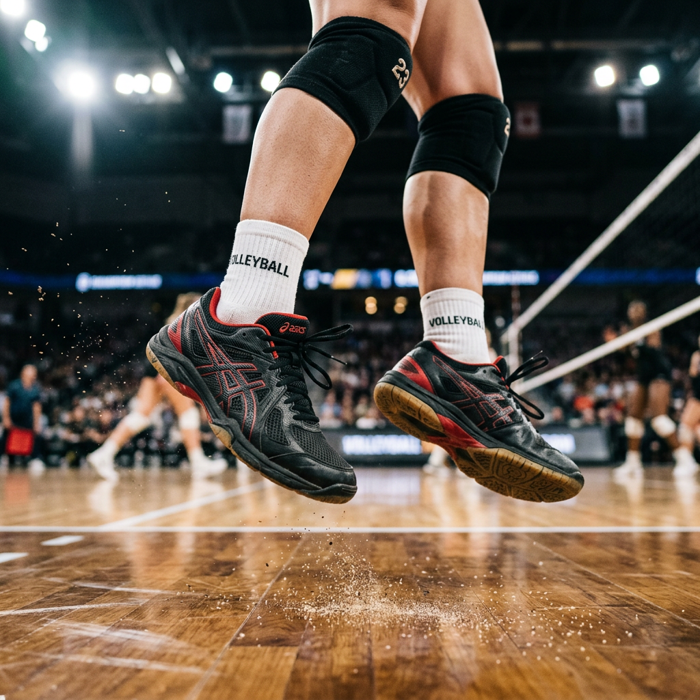
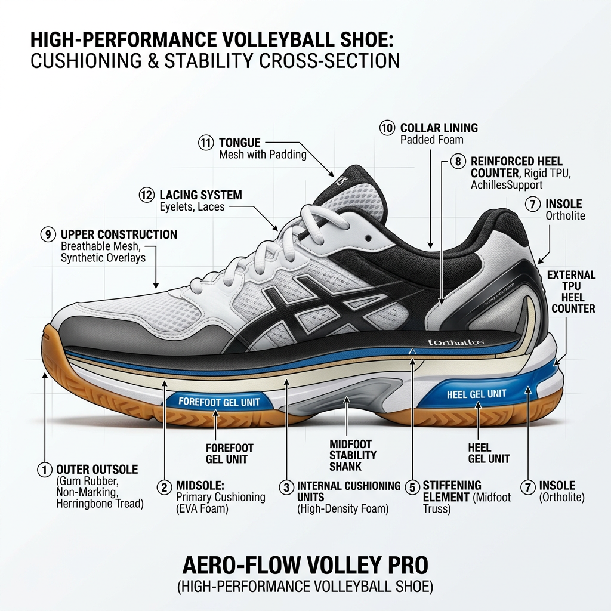
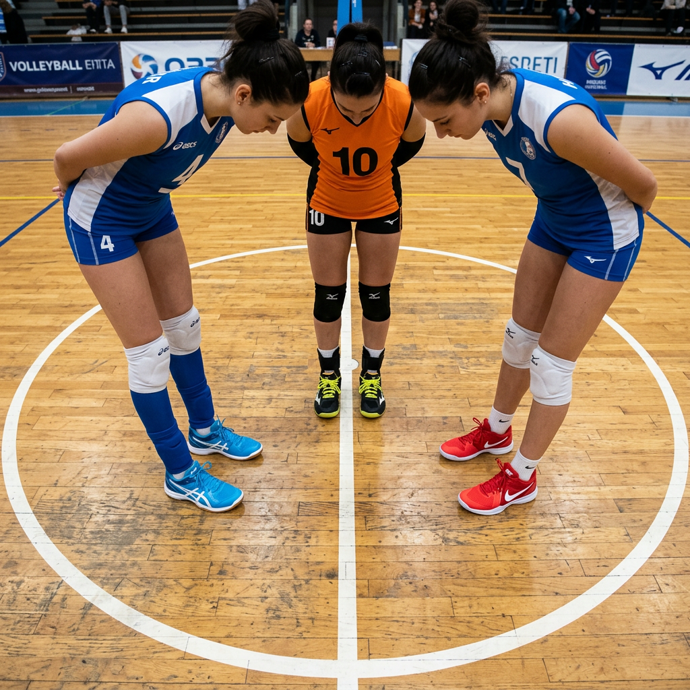

Choosing the Best Shoes in Volleyball: The Definitive Buyer’s Guide for Peak Performance
The Invisible Force Behind Every Vertical Jump and Sudden Cut
In the high-stakes environment of competitive volleyball, a single millisecond is the difference between a game-winning block and a ball hitting the floor. You’ve spent hours perfecting your swing and your footwork, but if you are wearing the wrong shoes in volleyball, you are effectively playing with a governor on your engine. Most athletes realize too late that their standard cross-trainers or basketball shoes are the primary reason for their lagging lateral speed or recurring patellar tendonitis.
The physics of volleyball are unique. Unlike running, which is linear, or basketball, which involves long sprints, volleyball is a game of explosive verticality and constant, high-velocity lateral shifts. To dominate, you need footwear engineered specifically for these biomechanical demands. This guide breaks down the technical requirements of elite-level volleyball shoes to help you make an informed investment in your performance and longevity.

The PAS Framework: Why Your Current Footwear Might Be Holding You Back
The Problem: Many players settle for generic athletic shoes that lack the specific structural integrity required for court sports. These shoes often have high stack heights that increase the risk of ankle rolls or outsoles that lose grip the moment a thin layer of dust hits the floor.
The Agitation: Imagine being a split-second late to a closing block because your shoe slid just an inch. Or consider the cumulative impact on your joints; every time you land from a jump, you absorb several times your body weight. Without specialized shock absorption, that energy travels straight into your knees and lower back, shortening your career and decreasing your vertical over time.
The Solution: Professional-grade shoes in volleyball are designed with a low center of gravity, high-friction gum rubber outsoles, and lateral outriggers. These features provide the 'bite' needed for transition movements and the 'rebound' required for repetitive jumping.
The Four Pillars of Elite Volleyball Footwear
1. Superior Traction and Grip
The foundation of every movement in volleyball is the floor-to-shoe interface. Most high-end volleyball shoes utilize a gum rubber compound. Unlike traditional rubber, gum rubber is softer and more pliable, allowing it to micro-conform to the wooden surface of the court. This provides the non-slip grip necessary for the 'stop-and-pop' movements of a setter or the deep defensive lunges of a libero.
2. Impact Protection and Energy Return
Volleyball players jump hundreds of times in a single match. The cushioning system in your shoes must perform two roles: attenuation and propulsion. You need foam or gel technology in the forefoot to soften the landing, but it must be firm enough to provide energy return. If the cushioning is too soft (like a running shoe), you lose power during the take-off phase of your approach.

3. Lateral Stability and Support
Because volleyball involves constant side-to-side shuffling and sudden changes in direction, the 'upper' of the shoe must be reinforced. Look for shoes with a lateral outrigger—a small extension of the sole on the outer edge of the foot. This increases the surface area and provides a physical barrier against ankle inversion (rolling your ankle).
4. Lightweight Breathability
Weight is the enemy of verticality. Every extra ounce on your feet is extra work for your calves and quads. Modern shoes in volleyball utilize heat-pressed mesh and synthetic overlays to keep the weight at a minimum while maintaining the structural 'lockdown' feel required for high-intensity play.
Position-Specific Footwear Requirements
While all volleyball shoes share core traits, your role on the court should dictate your final choice:
- Middle Blockers & Outside Hitters: You need maximum cushioning. Your priority is shock absorption due to the high volume of jumping and landing. A mid-top version may provide extra psychological and physical ankle support.
- Setters & Liberos: You need agility and a low profile. You prioritize a shoe that is lightweight and sits closer to the ground to allow for faster reaction times and better 'court feel' during defensive transitions.

The Verdict: Investing in Your Game
Choosing the right shoes in volleyball is not about aesthetics or brand hype; it is a technical decision that impacts your safety and your stats. A dedicated court shoe provides the lateral stability to prevent injury, the traction to improve your defensive range, and the cushioning to protect your joints for the long season ahead.
When you step onto the court, your equipment should be the last thing on your mind. By selecting footwear engineered for the specific rigors of the sport, you ensure that your only focus is the next point. Don't let your shoes be the weak link in your performance. Prioritize technical specs, understand your positional needs, and choose a shoe that works as hard as you do.